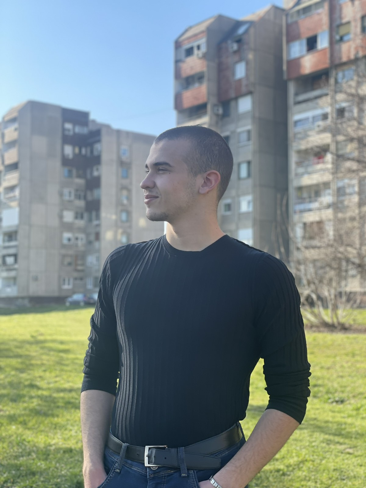
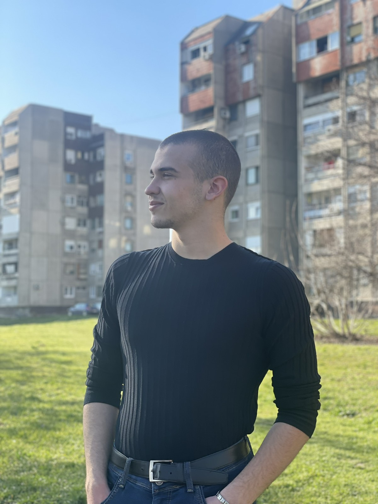

Moja priča

 

Zovem se Aleksa Vasiljević i dolazim iz Srbije. Trenutno sam učenik Prve kragujevačke gimnazije, informatičkog smera. Programiranjem i dizajnom sam se počeo baviti iz radoznalosti, a danas mi je to velika strast. Posedujem iskustvo u izradi web sajtova, kreiranju sadržaja i razvoju igara pomoću Unity engine-a.
Moji ciljevi su da se razvijam u IT svetu i pružim svojoj porodici kvalitetan život radeći ono što volim. Volim da učim nove tehnologije, sarađujem s klijentima i pronalazim kreativna rešenja za tehničke izazove.
U slobodno vreme se bavim trčanjem i biciklizmom. Verujem da kombinacija discipline, kreativnosti i motivacije čini temelj uspeha.

Moji hobiji:
• Trčanje i biciklizam – odličan način da ostanem fizički i mentalno aktivan.
• Čitanje knjiga o razvoju ličnosti i IT industriji.
• Gledanje tehnoloških tutorijala i testiranje alata.
• Igranje strateških i kreativnih igara (kao inspiracija za moje igre).

Moja filozofija:
• Posvećenost kvalitetu, ne brzini.
• Originalnost i autentičnost su važniji od kopiranja.
• Svaki projekat je prilika za učenje.
• Poštovanje prema klijentu i korisniku dolazi pre svega.
• Otvoren sam za saradnju, povratne informacije i nove izazove.